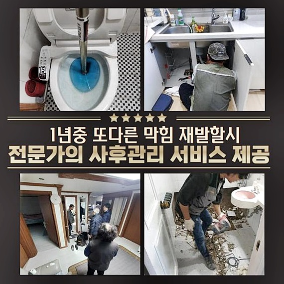
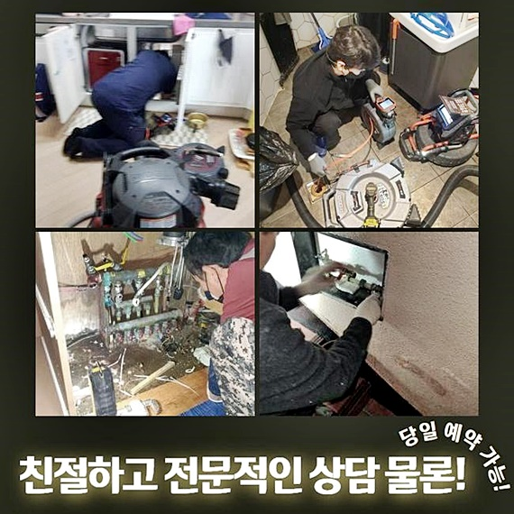
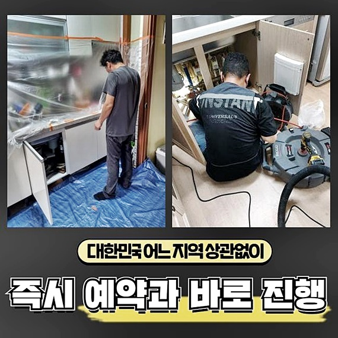
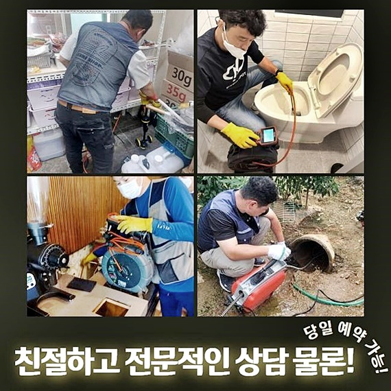
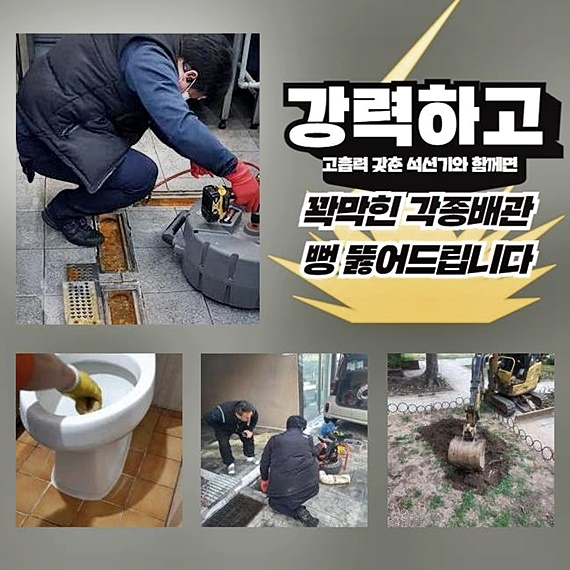
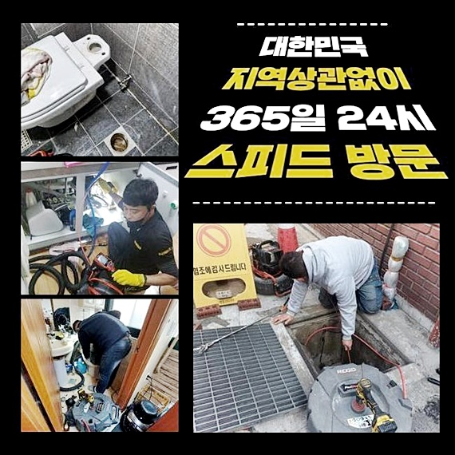
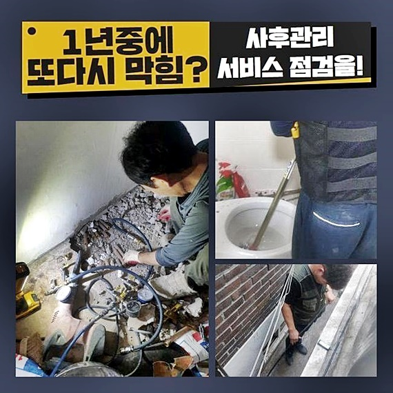

🏠 남동구 서창동화장실하수구역류 서창2동 악취차단 부속수리
용인 남동 싱크대막힘 전문 시공 후기

📋 작업 개요
- 위치: 용인 남동, 남동, 용인
- 서비스 유형: 싱크대막힘, 하수구막힘, 배관막힘, 누수수리, 역류해결, 배관청소, 고압세척, 악취차단
- 작업 일시: 2024. 6. 6. 17:09
- 업체명: 하수구수사대 (010-5615-2118)
🔍 문제 상황
남동구 서창동화장실하수구역류 서창2동 악취차단 부속수리
반갑습니다! 하수관로 설비를 고쳐내는 전문인인데요!
하수관로가 갑자기 물이 안빠지면 생활들을 지속시키는데에 불편들이 극도로 생겨나요
금일엔 앞서서 방문했었던 막히게된 장소의 예시를 보고 막힘에 관하여 일러드릴테니 관련내용을 전혀 모르셔도 요긴하게 쓰일것으로 확신해요!
내방드린데는 배수장애가 발생된 현장이였습니다
셀프세탁방과 거주시설들이 위치한 복합건물이였죠
개별세대의 배수시설이 막히는바람에 서둘러 가보았어요
해당 내용을 보고있는 여러분이 불편을 마주하여 곤란해진 상태라면 전문적으로 해결하는 배관해결사들에게 도움을 청해 해결해보세요!
배수구를 청소해주는걸 보신다면 고객님에게 막힘을 시정해내고 빈틈없는 작업들을 수행할 것을 자신있게 말씀드리고 재빨리 달려갔죠
고객님은 황급히 출동을 요청하셔서 곧장 방문했습니다
급한 상황에서도 저희의 전문가는 곧장 찾아뵙고 고객분들을 돕는답니다
이번에 내방했었던 문제의 현장의 경우엔 아래에 점포였던 세탁소로 이부분도 배수장애가 없진않은지 체크해보아야 했습니다
세탁소의 경우 배수시설이 제 기능을 잃으면 운영을 못하기에 막힘증상에 피해가 실로 크게 나타나요

🔎 원인 분석
💡 전문가 진단: 정밀 진단 장비를 사용하여 슬러지의 고착 여부를 판명하고 타격/세척 작업을 실시했습니다.
시간들을 아낄수있으며 영업 시에 불미스러운 일이 없도록 선제적으로 움직여보았죠
계신 곳에 도달해서 배수라인을 관찰해보니 천장부분에 배수라인이 위치해있던 상태였습니다
증상의 근원이 뭔지 알아보고 이물들의 세척으로 문제의 구간을 우선적으로 작업해야했습니다
해당 장소에 도착하니 집 안에 있던 배수구가 통수가 불가하던 상태로 보여졌죠
배수관 관련 용품을 써서 스스로 사태를 타개하고자 했으나 호전이 보이지않으셨대요
끓는 온수도 내려보았지만 되레 역류하는 증세도 불거져 컨디션이 수렁으로 빠졌다고 전달하셨습니다
금일 사례에서는 외측부터 깔끔히 작업들을 이어가고 가정의 배수관으로 뻗어나가는 라인의 하수구 작업들을 진행해주었습니다
세탁소는 내부 하수라인과 접촉되어 있었기에 생활이물이나 옷감등에서 탈락된 오염물들이 퇴적된다면 증상을 생겨나게 합니다
때문에 증세가 거듭될 수 없게 세척을 수행했습니다
샤프트를 통해 구석구석 세척해주었습니다
영업이 주된 목적인 세탁소의 경우 문제가 발현되었을 경우 치명적이므로 주기적으로 점검들을 해줘야합니다
까닭이 나오지않은 단계에서 접근을 한다면 이차적 증상이 생겨날 지 모릅니다
개별세대의의 안으로 올라서 관찰해보니 욕실쪽에서 수돗물을 열어보니 씽크대공간과 욕실 모두 역류증상이 목격되었고 막혀있던 상태였는데요

🔧 작업 과정
역류들이 생겨났다는건 하수관의 통로가 좁아진 탓에 사용된 물들을 허용하지못해 역류들이 야기되거나 막혀버려서 모습이죠
천장부분에 매립된 하수 시스템에 오류가 있기에 세척과정을 말씀드렸습니다
보통 유수로가 문제들의 이유들을 생각한다면 구조의 장애가 있는 경우가 있죠
전문적이지않은 시각에선 문제가 없는것처럼 보이겠으나 점검 과정에서 내식성이 떨어진 상태라던가 역으로 설치된 배관때문에 원인이 나타날수 있죠
오늘 막히게된 장소의 장소에서는 세척에 탁월한 샤프트기기 사용을하고자 위생적으로 비닐을 통해 보양 후 작업을 개시했죠
보통 문제가 심하지않다면 샤프트기를 운용하여 청소가 가능하답니다
그러나 외부까지 문제가 뻗어있다거나 심부쪽에 고착물이 잔존하거나 다중으로 뻗어있다던가하는 문제가 심각하면 샤프트장치로 해결되지 못합니다
이때는 고압의 물줄기는 쏘는 해결을 도출시켜야 합니다
샤프트장치는 노커체인이 돌아가는 물리력을 통하여 흡착물까지 제거하는 중요임무를 맡고있습니다
타공위치를 확인하고 타공한 뒤 그쪽으로 샤프트를 써서 잔해들을 제거시켰죠
작업을 진행하니 옷감의 부산물처럼 보이는 잔해가 발견되었고 세탁배수구를 통해 배출되지 않았던 것도 배출되었죠
내시경장비로 관찰 가능한 내부적 모습에 관련되어 안내드릴게요
내시경이 가지고있는 중요성들은 강조한 덕에 어렵지않게 대다수의 고객분들이 알고계십니다
외부로 드러나지않은 하수구를 직접적으로 관찰하고자한다면 내시경장치를 운용하여 파악하는 것입니다
수많은 기조가 작용해 통수를 막기도하고 내시경기기를 가지고서 여러방면에서 고민들을 파악하고 무슨 해결책이 시행되어야되는지 파악해볼 수 있죠
내시경기기를 가지고 구석구석 관찰하고 세척을 이어갔어요
끝에서부터 청소를 진행해서 확실하게 복구시켜드렸습니다
집 안의 화장실과 씽크대에도 수돗물을 넣어서 한꺼번에 쏟아내니 전과달리 배수되었답니다
고객분도 하수들이 빠지는것을 목격하시고 안심이 된다 하시더라구요
골칫덩이인 배수로를 선제적으로 청소해주고 시정해냈죠


✅ 작업 완료
만에하나 슬러지등이 쌓여서 배수구 어딘가 막혔다면 하수라인에 좋지못한 영향들을 끼쳐서 물샘이 발생될 확률이 높고 물들이 새어나오는 증세가 생긴다면 2차적인 문제들이 생겨날지도 몰라서 관리에 힘써주셔야 해요
거리에 상관없이 한시간을 넘기지않고서 찾아뵈는것이 실현되고 의뢰인분에게 결과들을 보여드리고 고객분은 불안하지않게 이어가고 있으니 걱정보다는 문의하신다면 조속히 불편을 풀어드리니 안심하시고 연락주세요
이것말고도 문의사항이 있다면 전화하신 뒤 여쭈셔도 좋으니 문의 시 환영하는 마음으로 여러분을 맞이할게요!
막히게된 장소의 현장에서의 수리들이 간절할 경우 주저없이 저희의 전문인에게 연락하세요
심각해진 배수관 고장! 저희업체와 해결하는건 어떨지요?
빈틈없는 정책으로 여러분을 도울게요!




⚠️ 베란다 누수 및 방수 관리 방법
- ✅ 비가 많이 올 때 창틀 주변이나 아래층 천장에 얼룩이 생기는지 정기적으로 확인해 보세요.
- ✅ 우수관 주변 실리콘 마감이 들뜨거나 깨진 틈새가 있는지 손상 여부를 수시로 체크하세요.
- ✅ 베란다 바닥 타일의 줄눈(메지)이 소실되면 그 틈으로 물이 침투하여 누수가 유발됩니다.
- ✅ 누수 의심 증상 발견 시 방치하면 아래층 손실이 커지므로 즉시 전문가의 진단을 받으십시오.
💡 핵심 정리
- 확실한 장비 작업(내시경 점검 및 샤프트 스케일링)으로 원인을 뿌리 뽑습니다.
- 작업 후 1년 이내에 동일한 부위 재발 시 100% 무상 A/S 서비스를 보장합니다.
- 서울 · 경기 · 인천 전 지역에 24시간 언제든 긴급 출동할 수 있도록 항시 대기 중입니다.
❓ 자주 묻는 질문 (FAQ)
🚨 용인 남동 싱크대막힘 문제로 고민이신가요?
정확한 원인 진단과 확실한 시공으로 재발 없는 해결을 약속드립니다.
24시간 긴급 출동 | 서울 · 경기 · 인천 전지역 | 1년 내 재발 시 무상 A/S